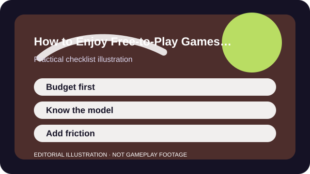

QUICK ANSWER
The short version
Set a budget before you browse, know exactly what money changes, and add enough friction that purchases happen because you chose them—not because the store cornered you.
A free game is never truly free of incentives. The real question is whether its store, battle pass, pack system, or convenience layer fits your habits and your tolerance for friction.
The safest spending plan is boring on purpose: a budget, a pause, and a rule for what kinds of purchases are acceptable. That dull structure protects you from high-emotion moments much better than willpower alone.

CHECKLIST
What to confirm before you change anything
- Set an entertainment budget before the season, banner, or event begins.
- Write down whether a purchase affects cosmetics, convenience, access, or actual power.
- Turn on password or approval friction for every payment route you can.
- Check the local-currency price instead of relying on funny-money store points only.
- Decide what counts as a stop condition: one pass, one skin, no randomized spending, or no repeat charges this month.
The point is to decide in a neutral moment. Stores are designed to make later moments feel more urgent, generous, or fleeting than they really are.
SCENARIO
When a new season suddenly makes the store feel urgent
A live game often pairs new content with fear of missing out: exclusive skins, limited banners, expiring currencies, or progress tracks that only pay off if you start immediately. In that moment, the store stops feeling optional and starts feeling like part of the game loop.
That is exactly when a written rule helps. If the purchase fits the budget and the category you already approved, buy it calmly. If not, the answer is already no, and you do not need a fresh emotional debate every time the store updates.
PROCESS
A repeatable way to work through it
Wait one full session before buying
A short pause separates real interest from frustration, hype, or social pressure.
Describe what the purchase actually changes
If you cannot explain the value clearly, you are probably buying a feeling instead of a plan.
Compare recurring cost, not only one click
A cheap monthly pass can become an expensive habit if you repeat it across several games.
Review after the event ends
The best audit question is simple: did the purchase improve how you played, or only how you felt while buying?
A spending plan succeeds when missed offers no longer feel catastrophic. You should still be able to enjoy the game on the days you buy nothing at all.
COMMON MISTAKES
What usually makes the problem worse
Buying to fix frustration
A rough losing streak or a confusing progression wall is a bad moment to decide what deserves money.
Treating sunk cost as proof you should keep going
Past purchases do not obligate future purchases.
Ignoring randomized odds or bundle leftovers
Leftover currencies and chance-based rewards are built to blur the real price.
SUCCESS CRITERIA
How to know the change actually worked
- You can explain why a purchase fit your plan in one sentence.
- Store updates do not force you into fresh budget decisions every time.
- The game remains enjoyable even when you skip a sale or event.
- You know which monetization models are personal red flags for you now.
Healthy free-to-play spending is not about never paying. It is about knowing why you paid, what changed, and whether the game still works for you when the answer is no.
SOURCES AND LIMITS
Where to verify live details
- Household rules and legal protections vary by region and payment provider.
- Children and teens need account-level safeguards beyond simple personal discipline.
- Compulsive spending patterns may need help beyond general gaming advice.
Menu names, defaults, and device behavior can change after updates. Use the linked official support surfaces for the current live details and keep this guide for the process around them.